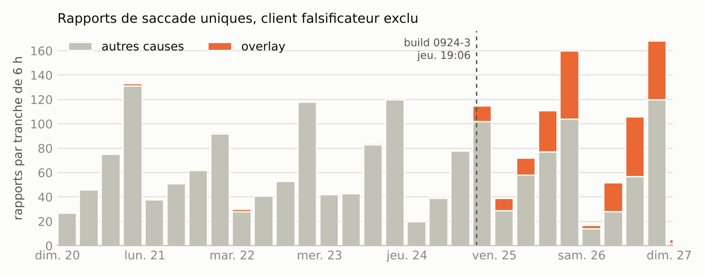
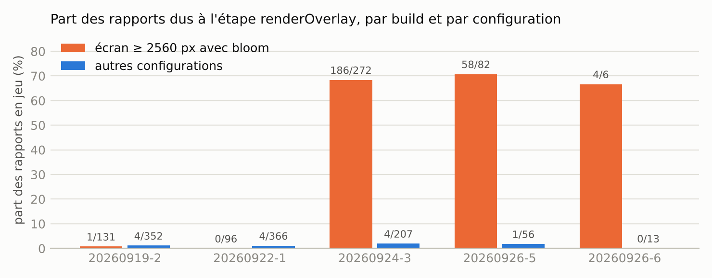
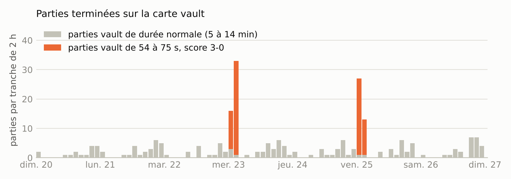
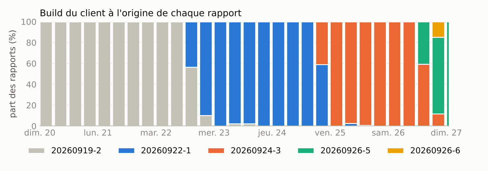

UE03 Données et Analytics. Rapport : qualité des données (B3), métriques et logs (C3), détection de comportements (E), rapport d'incident (F).
Le build client beta-20260924-3, diffusé le jeudi 24 septembre vers 19 h, a introduit une régression dans l'étape de rendu renderOverlay. Elle passe de 3 ms au plus à 223 à 619 ms et gèle l'image une demi-seconde.
Elle ne touche que les joueurs dont l'affichage fait au moins 2 560 px de large avec l'effet bloom activé : 39 des 40 clients de ce profil vus sur les nouveaux builds, tous navigateurs et toutes cartes confondus. Les builds du 26 ne la corrigent pas.
Oui, de deux façons.
Farming. Les nuits du 23 et du 25 septembre, 83 parties sur la carte vault durent 54 à 75 s et finissent toutes 3-0. Les seuls rapports émis depuis ces parties viennent de trois clients. Le serveur n'en a mis que 17 en quarantaine.
Rapports falsifiés. Le client 5e1f0c7a envoie 70 rapports physiquement impossibles du 24 au 26, rattachés à 70 parties qui ne se terminent jamais.
Le service écrit des lignes JSON dans un volume partagé. Alloy les suit et les pousse dans Loki. Le service expose /metrics, que Prometheus interroge toutes les 15 s. L'export historique est lu par tools/import-export.js, converti au schéma des logs en direct et poussé dans Loki avec son horodatage d'origine. Grafana lit les deux sources ; ses datasources et ses trois tableaux de bord sont provisionnés depuis le dépôt.
Chaque rapport de saccade passe par src/classify.js, qui lui ajoute un bloc cls : cause, client, contrôles d'intégrité. Le même code sert à l'ingestion en direct, à l'import de l'export et aux métriques : une seule définition de chaque cause dans tout le système.
| Label | Valeurs | Pourquoi un label |
|---|---|---|
service | 1 | Sélecteur de base de toutes les requêtes. |
source | 2 | live ou export : les deux jeux de données ne se mélangent jamais par accident. |
event | 6 | Presque toutes les requêtes filtrent sur un type d'événement ; le label évite de lire les autres flux. |
level | 3 | Filtre des erreurs sans parser la ligne. |
Soit 7 flux observés : 5 en direct, 2 pour l'export, un de plus si le service journalise une erreur. Le client (231 valeurs en 7 jours, non borné), la partie (851 valeurs), le build et la carte restent dans la ligne : en label, chaque valeur créerait un flux et un chunk à elle seule. Ils se filtrent à la requête avec | json.
Fichier data/admin-export-2026-09-20_26.log : 6,07 Mo, 264 344 lignes, 2 944 enregistrements, du 20 septembre 00 h 31 au 27 septembre 00 h 04 (heure de Paris). Tous les chiffres ci-dessous se recalculent avec node tools/quality-report.js. Les requêtes LogQL s'exécutent sur l'export importé ; E abrège {service="game-telemetry", source="export"} et la fenêtre [8d] est évaluée au 27 septembre.
| Constat | Chiffre | Preuve |
|---|---|---|
| Format multi-lignes : en-tête texte, sous-titre, bloc JSON indenté | 2 944 en-têtes pour 264 344 lignes, 0 bloc illisible | grep -cE '^(Performance spike|Game completed) ' data/*.log node tools/import-export.js --dry-run # parseErrors: 0 |
| Horodatage en heure locale américaine sur 12 h, sans fuseau | 882 lignes AM, 2 062 PM ; 4 gabarits de longueur différente | grep -E '^(Perf|Game)' data/*.log | sed 's/.* · //; s/[0-9]/N/g' | sort | uniq -c |
| Fuseau : heure de Paris (UTC+2) | 2 944 sur 2 944 : l'en-tête lu comme de l'UTC est en avance de 2 h sur createdAt (epoch UTC) | node tools/quality-report.js
# timezoneOffsetHoursVsCreatedAt: {"2": 2944} |
| Ordre antichronologique | 2 941 paires consécutives sur 2 943 vont du plus récent au plus ancien | node tools/quality-report.js # descendingPairs |
| Deux schémas de rapport | 2 085 rapports v1, 25 rapports v2 (tous du build 0926-6) : rttMs passe de report à report.network, une étape physics apparaît | sum by (schema, build) (count_over_time(E | event="perf_spike" | json schema="cls.schema", build="report.build", dup="cls.duplicate" | dup!="true" [8d])) |
Les blocs « Game completed » n'ont pas les champs bots* ni le client | 796 sur 796 | Lecture du format : 15 clés, contre 18 dans le bloc server d'un rapport. |
Traitement. L'importeur découpe sur l'en-tête, convertit l'heure murale en UTC en calculant le décalage de Europe/Paris à l'instant concerné (le changement d'heure est couvert par un test), trie par date croissante parce que Loki refuse les lignes trop en retard dans un flux, et lit rttMs aux deux emplacements.
| Constat | Chiffre | Preuve |
|---|---|---|
| Doublons exacts, exportés deux fois à la suite | 55 enregistrements, 1,9 % : 38 rapports et 17 parties. Restent 2 110 rapports et 779 parties uniques. | count(sum by (id) (count_over_time(E | event="perf_spike" | json id="report.id" [8d])) > 1) # 38 sum by (event) (count_over_time(E | json dup="cls.duplicate" | dup="true" [8d])) |
| Trou de collecte | Mardi 22, de 13 h 59 à 16 h 14 : 2 h 15 sans aucun enregistrement, en pleine journée. Le plus long silence nocturne est de 1 h 24. | sum(count_over_time(E [1h])) # pas de point à 14 h et 15 h le 22 |
| Rapports perdus | 26 numéros de séquence manquants sur 2 066 attendus chez les clients honnêtes, 1,3 % | node tools/quality-report.js # gaps.sequence |
| Rapports falsifiés | 70 rapports, 3,3 %, un seul client. Les quatre contrôles échouent sur chacun. | sum by (client) (count_over_time(E | event="perf_spike"
| json client="cls.client", suspect="cls.suspect", dup="cls.duplicate"
| dup!="true" | suspect="true" [8d])) # {client="5e1f0c7a"} 70 |
createdAt non entier | 71 lignes : les 70 rapports falsifiés et leur doublon. Partout ailleurs, un entier en millisecondes. | node tools/quality-report.js # nonIntegerCreatedAt |
| Rapports sans fin de partie | 72 parties citées par des rapports n'ont pas de « Game completed » : les 70 du client falsificateur et 2 parties en cours à la fin de l'export | node tools/quality-report.js # spikeServersWithoutCompletedGame |
| Parties sans aucun rapport | 99 parties sur 779. Normal : une partie fluide n'émet rien. | node tools/quality-report.js # gamesWithoutSpike |
Traitement. Les doublons sont conservés et marqués cls.duplicate : ils restent comptables et chaque panneau les exclut. Les rapports falsifiés sont conservés et marqués cls.suspect ; ils sont exclus des statistiques de performance. Loki fusionne deux lignes identiques au même instant : l'importeur ajoute donc à chaque ligne son numéro de ligne d'origine (exportLine).
Limite : l'en-tête et le JSON sont toujours cohérents entre eux (identifiant de partie, cause, durée, score : 0 écart sur 2 944). L'export ne contient que les fins de partie et les saccades : il ne dit rien des parties abandonnées ni du nombre de joueurs connectés.
| Métrique | Type | Labels | Justification |
|---|---|---|---|
http_request_duration_seconds | Histogramme | method, route, status_code | Les trois signaux RED en une métrique : débit (_count), erreurs (code), durée (buckets de 1 ms à 2,5 s). route est le gabarit Express ; une URL inconnue devient unmatched, pour qu'un scanner ne crée pas une série par chemin. |
perf_reports_total | Compteur | cause, build, source | Rapports reçus par cause classée et par build. 7 causes, quelques builds actifs, 2 sources. Le build vient du client : il est comparé au motif beta-AAAAMMJJ-N, sinon other. |
perf_report_frame_milliseconds | Histogramme | cause | Gravité de la saccade. Buckets de 50 ms à 5 s : sous 50 ms il n'y a pas de rapport, au-delà de 5 s l'onglet était masqué. |
perf_reports_rejected_total | Compteur | reason | Rapports refusés : corps invalide ou identifiant invalide. Distingue un client cassé d'un service cassé. |
perf_reports_suspect_total | Compteur | check | Rapports qui violent un invariant physique, par contrôle (4 valeurs). Zéro en fonctionnement honnête. |
game_games_active | Jauge | map | Parties en cours : une quantité qui monte et descend, lue à chaque scrape depuis la flotte. |
game_games_created_total, game_games_completed_total | Compteurs | map ; map, outcome, quarantined | Activité de jeu. 5 cartes, 2 issues, 2 états de quarantaine. |
game_duration_seconds | Histogramme | map | Durée des parties. Buckets de 60 à 900 s, avec des bornes à 120 et 200 s pour isoler les parties anormalement courtes. |
game_server_tick_gap_max_milliseconds | Jauge | aucun | Pire écart entre deux ticks parmi les parties en cours : santé des serveurs de jeu. |
game_telemetry_build_info | Jauge à 1 | build, version | Version déployée, à croiser avec les autres séries. |
| Métriques par défaut de prom-client | CPU, mémoire, retard de la boucle d'événements. Ce dernier compte : le traitement d'un rapport est synchrone. |
Recording rules (observability/prometheus/rules/recording.yml) : débit par route, part des 5xx, p95 par route, rapports par build et cause, part des rapports overlay par build sur 1 h, part des parties de moins de 120 s par carte sur 30 min. Les deux dernières portent les alertes de la partie 4.
| Métriques (Prometheus) | Logs (Loki) | |
|---|---|---|
| Question type | Combien, à quelle vitesse, quelle proportion, maintenant et dans le temps. | Qui exactement, quelle partie, quel rapport, avec quelles valeurs. |
| Dimensions | Bornées et connues d'avance : route, code, carte, cause, build. | Non bornées : client, partie, largeur d'écran, navigateur, détail de chaque étape de rendu. |
| Coût | Fixe : une série par combinaison de labels, quel que soit le trafic. | Proportionnel au volume : 2 à 3 ko par rapport. |
| Usage ici | Tableau de bord de santé, alertes sur les taux : régression overlay par build, farming par carte, erreurs, latence. | Enquête et preuve : population touchée, clients suspects, données historiques, alertes par client. |
Exemple concret : la régression se détecte avec une métrique, la part des rapports overlay par build. Elle s'explique avec les logs : c'est en croisant largeur d'écran et bloom, deux champs absents des labels, que la population touchée apparaît. Mettre la largeur d'écran ou le client en label Prometheus multiplierait le nombre de séries par des centaines pour une question posée une fois par incident.
L'export historique ne peut vivre que dans Loki : Prometheus n'accepte pas d'échantillons vieux de deux semaines, alors que Loki les prend avec leur horodatage d'origine.
Un rapport décompose le temps d'une image par étape. Pour chaque cause, un champ sort de sa plage normale d'un ordre de grandeur, et aucune valeur n'est observée entre les deux plages : le seuil est placé dans cet intervalle vide. La classification est une suite de règles évaluées dans l'ordre du tableau (src/classify.js).
| Cause | Signature | Normal (max) | Anormal (min) | Seuil | Rapports | Image médiane |
|---|---|---|---|---|---|---|
network | reason = network, latence aller-retour élevée, file d'attente réseau non nulle | 60 ms | 182 ms | 150 ms | 92 | 41 ms |
tab_hidden | activité visibilityHidden : onglet masqué, le navigateur suspend le rendu | absente | présente | 158 | 3 661 ms | |
shader_compile | firstCapture, dizaines de nouveaux programmes GPU, toujours en phase d'échauffement | 2 | 40 | 20 | 459 | 475 ms |
overlay | étape renderOverlay | 3 ms | 223 ms | 100 ms | 262 | 488 ms |
world | étape worldDynamics | 0,4 ms | 70 ms | 30 ms | 20 | 168 ms |
render_generic | aucune des signatures : rendu du monde lent, lié à la machine et à la carte | 1 119 | 99 ms |
Les 2 110 rapports uniques sont classés, aucun ne reste unknown. Les tests rejouent 600 rapports synthétiques des six causes, dans les deux schémas : tous retrouvent leur cause.
sum by (cause) (count_over_time(E | event="perf_spike" | json cause="cls.cause", dup="cls.duplicate" | dup!="true" [8d]))
Les contrôles d'intégrité sont séparés de la cause. Un rapport est suspect s'il contient une durée négative, un fps supérieur à 144 (plafond du client), une image plus courte que son propre temps de travail, ou une étape render différente de la somme de ses détails à plus de 1 ms.


renderOverlay dure 223 à 619 ms (médiane 434 ms), l'image 260 à 691 ms (médiane 490 ms).sum by (build) (count_over_time(E | event="perf_spike" | json build="report.build", cause="cls.cause", dup="cls.duplicate" | dup!="true" | cause="overlay" [8d])) / sum by (build) (count_over_time(E | event="perf_spike" | json build="report.build", dup="cls.duplicate" | dup!="true" [8d])) sum by (width, bloom) (count_over_time(E | event="perf_spike" | json width="report.graphics.width", bloom="report.graphics.bloom", cause="cls.cause", dup="cls.duplicate" | dup!="true" | cause="overlay" [8d]))

7247704e (7), 5db9ad62 (5), 7440b319 (2), présents les deux nuits et jamais vus dans une partie normale.Limite : le bloc « Game completed » ne contient pas l'identifiant du client. Les 69 autres parties ne sont rattachées à personne ; les trois clients sont des suspects, pas une liste complète.
sum by (map, s0, s1) (count_over_time(E | event="game_completed" | json map="server.map", s0="server.score[0]", s1="server.score[1]",
short="cls.short", dup="cls.duplicate" | dup!="true" | short="true" [8d])) # {map="vault", s0="3", s1="0"} 83
Le client 5e1f0c7a envoie 70 rapports du jeudi 24 à 09 h 35 au samedi 26 à 22 h 37. C'est le client le plus bavard de l'export : le suivant en envoie 43, la médiane est de 8.
render négative, par exemple −30,6 ms, et image de 50 ms pour 368 ms de travail déclaré.createdAt à décimales.0924-3 dès 09 h 35, neuf heures et demie avant le premier rapport d'un autre client sur ce build (19 h 06) : client modifié, ou accès au build avant sa sortie.Ces rapports sont fabriqués et envoyés directement à l'API, qui ne vérifie que le format de l'identifiant. Ils gonflent de 8 % le volume du vendredi (31 sur 413) et sont exclus de toutes les statistiques de performance de ce rapport.
| Phénomène | Observation | Lecture |
|---|---|---|
| Ticks serveur dégradés vers 3 h | Lundi 21 de 02 h 57 à 03 h 27 et mercredi 23 de 03 h 00 à 03 h 19 : l'écart maximal entre ticks passe de 50 à 53 ms à 368 à 860 ms sur 9 parties terminées. 7 des 92 rapports network de la semaine tombent dans ces deux demi-heures. | Même heure, un jour sur deux : tâche planifiée côté hébergement (sauvegarde, maintenance). À confirmer avec l'hébergeur. |
| Événement sur la carte foundry | 20 rapports world, tous sur foundry : 10 le lundi 21, 10 le jeudi 24, aucun les autres jours. Les 20 parties concernées durent 171 à 282 s, sous le minimum habituel de 300 s. | Événement de jeu propre à foundry, tous les trois jours, qui charge la physique et écourte la partie. |
| Compilation des shaders | 459 rapports, 22 % du total, toujours en phase d'échauffement, 54 à 83 par jour. | Coût fixe au premier affichage. Stable : ce n'est pas l'incident, mais c'est le deuxième poste. |
| Cycle journalier | Creux de 4 h à 6 h (23 à 24 enregistrements par heure sur la semaine), pic de 20 h à 22 h (221 à 249). | Toute alerte sur un volume doit comparer à la même heure, pas à une moyenne. |
Les seuils viennent de l'export, puis chaque règle a été rejouée dessus par pas de 5 minutes. La colonne « Rejouée » donne le résultat.
| Alerte | Condition | Justification du seuil | Rejouée sur l'export |
|---|---|---|---|
OverlayRegressionOnBuildPrometheus | Part des rapports overlay d'un build > 20 % sur 1 h, avec au moins 10 rapports, pendant 15 min | Référence 0,7 %, incident 29 %. La fenêtre d'une heure et le minimum de 10 évitent un ratio calculé sur 2 ou 3 rapports. | Jeudi 24 à 20 h 35, 19 min après le premier rapport. Aucun déclenchement sur les anciens builds. |
ShortGamesFarmingPrometheus | Plus de 50 % des parties d'une carte durent moins de 120 s sur 30 min, avec au moins 5 parties, pendant 10 min | Aucune partie normale sous 171 s ; les parties de farming durent 54 à 75 s. | Mercredi 23 à 01 h 40 et vendredi 25 à 01 h 10, 26 min après chaque début. Rien d'autre. |
QuarantinedGamesPrometheus | Au moins 3 parties en quarantaine en 30 min | 17 quarantaines en 7 jours, toutes pendant le farming. | Mercredi 23 à 01 h 50, vendredi 25 à 01 h 25. |
ForgedPerfReportsPrometheus | Au moins un rapport suspect en 10 min | Aucun client honnête n'en produit : 0 sur 2 040. | Jeudi 24 à 09 h 35, au premier rapport. |
ClientSendsForgedReportsruler Loki | Un même client envoie au moins 3 rapports suspects en 1 h | Nomme le client, ce qu'une métrique ne peut pas faire. Trois, pour ne pas bannir sur un bug isolé. | Jeudi 24 à 13 h 15, client 5e1f0c7a. |
ServerTickDegradedPrometheus | Écart maximal entre ticks > 100 ms pendant 2 min | Normal : au plus 53 ms. Dégradé : au moins 368 ms. 100 ms correspond à deux ticks manqués. | Couvre les deux épisodes de 3 h (mesure en direct, non rejouable à l'identique). |
OverlaySpikesOnWideScreensruler Loki | Au moins 8 rapports overlay d'écrans larges avec bloom en 1 h, pendant 10 min | Avant le build : au plus 1 par jour sur ce profil. | Vendredi 25 à 02 h 25 : plus tardive que la règle par ratio, mais elle désigne la population. |
ClientReportFloodruler Loki | Un client envoie plus de 60 rapports en 10 min | Maximum honnête : 43 rapports en 7 jours. | Aucun déclenchement. |
Service : Down, High5xxRatio, IngestSlow, RejectedReports | Scrape en échec 1 min ; 5xx > 2 % ; p95 d'ingestion > 250 ms ; refus > 10 % | Le service ne produit aucun 5xx en temps normal ; un rapport se traite en 6 ms environ ; le générateur de charge envoie 3 % de corps invalides. | Sans objet : l'export ne contient pas le trafic HTTP. |
Du jeudi 24 septembre à 20 h 16 jusqu'à la fin des données (dimanche 27 à 00 h 04), les joueurs équipés d'un écran d'au moins 2 560 px de large avec l'effet bloom subissent des gels d'image d'une demi-seconde en pleine partie. La cause est une régression de l'étape de rendu renderOverlay introduite par le build client beta-20260924-3. Elle est toujours présente dans les builds 0926-5 et 0926-6. L'enquête a aussi mis au jour deux abus sans lien avec la régression : du farming sur la carte vault et un client qui envoie des rapports falsifiés.

| Date | Événement |
|---|---|
| Lun. 21, 02 h 57 à 03 h 27 | Premier épisode de ticks serveur dégradés. |
| Mar. 22, 13 h 59 à 16 h 14 | Trou de collecte : aucun enregistrement pendant 2 h 15. |
| Mer. 23, 01 h 14 à 03 h 46 | Premier épisode de farming sur vault : 45 parties, 12 quarantaines. Second épisode de ticks dégradés de 03 h 00 à 03 h 19. |
| Jeu. 24, 09 h 35 | Premier rapport falsifié du client 5e1f0c7a, qui se déclare déjà en build 0924-3. |
| Jeu. 24, 19 h 06 | Premier rapport d'un client honnête sur le build 0924-3 : début de la diffusion. |
| Jeu. 24, 20 h 16 | Premier gel overlay sur le nouveau build. Début de l'incident. L'alerte proposée se serait déclenchée à 20 h 35. |
| Jeu. 24, 18 h à minuit | 41 % des rapports viennent déjà du nouveau build (47 sur 115) ; 11 gels overlay. |
| Ven. 25, 00 h 44 à 02 h 32 | Second épisode de farming : 38 parties, 5 quarantaines. |
| Ven. 25, 14 h 16 | Dernier rapport de l'ancien build 0922-1 : toute la population est exposée. 112 gels dans la journée. |
| Sam. 26, 12 h 32 | Build 0926-5 : la régression persiste (58 rapports en jeu sur 82 pour le profil touché). |
| Sam. 26, 20 h 50 | Build 0926-6, qui change le schéma des rapports (v2) : la régression persiste (4 sur 6). |
| Dim. 27, 00 h 04 | Fin de l'export. Incident toujours en cours. |
La décomposition du temps d'image contenue dans chaque rapport désigne une seule étape : renderOverlay, qui prend 223 à 619 ms au lieu de 0,4 à 3 ms. Les autres étapes sont dans leurs plages habituelles. Trois faits établissent que le build est la cause, et non une coïncidence :
L'export ne contient pas le code. L'hypothèse la plus cohérente avec les données est un traitement de la couche overlay dont le coût dépend de la largeur du tampon de rendu et qui n'est exécuté qu'avec le bloom : il faut les deux conditions réunies, et le seuil se situe entre 1 920 et 2 560 px. À vérifier dans le différentiel entre 0922-1 et 0924-3.
Ce que l'incident n'est pas. Ce n'est pas le réseau : la cause network reste à 10 à 18 rapports par jour. Ce n'est pas un navigateur, ni une carte, ni une carte graphique : tous sont représentés. Ce ne sont pas les rapports falsifiés : aucun n'est de cause overlay.
Les requêtes de la section 4.2 donnent le taux par build et la répartition par largeur et bloom. Le tableau de bord « 2. Performance côté joueur » les rejoue sur la semaine du 20 au 26 septembre ; le tableau de bord « 3. Activité de jeu et intégrité des parties » montre le farming et le client falsificateur. Population touchée et premier gel :
count(sum by (client) (count_over_time(E | event="perf_spike" | json client="cls.client", cause="cls.cause", wide="cls.wideBloom"
| cause="overlay" | wide="true" [8d])))
E | event="perf_spike" | json | cls_cause="overlay" | report_build="beta-20260924-3"
| line_format "{{.cls_client}} image={{.report_frameMs}}ms overlay={{.report_work_details_renderOverlay}}ms {{.report_graphics_width}}px"
| # | Action | Répond à |
|---|---|---|
| 1 | Corriger renderOverlay ou, en attendant, désactiver l'overlay ou le bloom par configuration distante pour les affichages d'au moins 2 560 px. Revenir à 0922-1 n'est possible que si le serveur accepte encore le schéma v1. | Saccades |
| 2 | Valider le correctif sur les trois largeurs touchées (2 560, 3 440, 3 840 px) avec bloom, puis suivre le taux overlay du nouveau build : il doit revenir sous 2 %. | Saccades |
| 3 | Bloquer le client 5e1f0c7a et vérifier comment il a connu l'identifiant du build 0924-3 avant sa diffusion. | Rapports falsifiés |
| 4 | Examiner les comptes derrière les clients 7247704e, 5db9ad62 et 7440b319 et annuler les gains des 83 parties. | Farming |
| # | Action | Répond à |
|---|---|---|
| 5 | Diffusion progressive des builds, avec l'alerte OverlayRegressionOnBuild comme critère d'arrêt : elle aurait signalé le problème 19 minutes après le premier gel, quand 41 % des joueurs seulement étaient exposés. | Détection tardive |
| 6 | Ajouter un écran large avec bloom à la matrice de tests de performance avant diffusion. | Régression non vue |
| 7 | Valider les rapports à l'ingestion : refuser ceux qui violent un invariant, vérifier que la partie existe, limiter le débit par client. | Rapports falsifiés |
| 8 | Journaliser l'identifiant du client dans game_completed : aujourd'hui 69 des 83 parties de farming ne sont rattachées à personne. | Farming |
| 9 | Durée minimale de partie pour compter une victoire ; mise en quarantaine sur le motif « moins de 2 minutes et 3-0 » plutôt que les 20 % actuels. | Farming |
| 10 | Identifier la tâche de 3 h qui dégrade les ticks et la déplacer ou la brider. | Ticks dégradés |
| 11 | Alerter sur l'absence de logs : une heure sans aucun événement en journée (le trou du mardi 22 est passé inaperçu). | Trou de collecte |
| 12 | Exporter depuis la console en JSON lines horodaté en UTC, sans doublon. | Qualité des données |